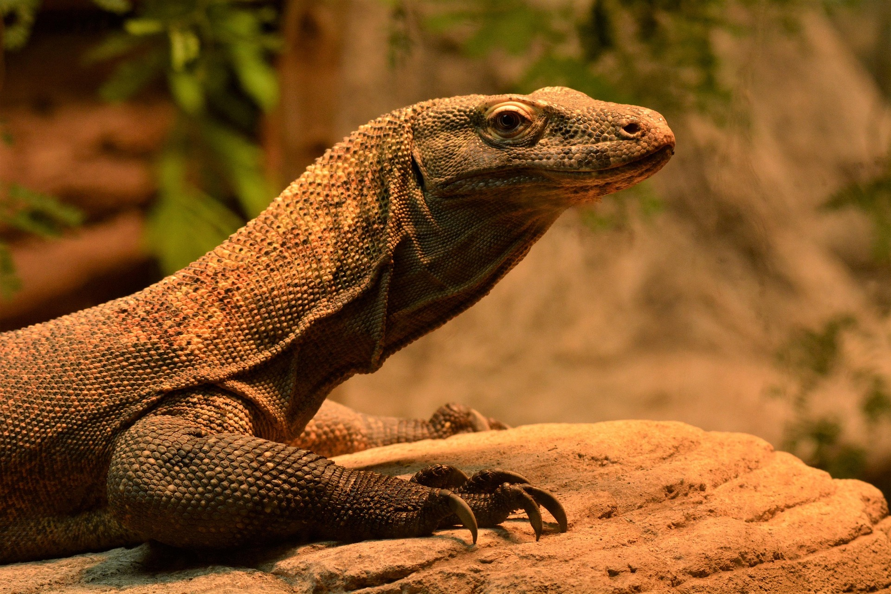

El dragón de Komodo es el lagarto más grande del mundo y uno de los reptiles más impresionantes que existen. Esta especie habita principalmente en algunas islas de Indonesia como Komodo, Rinca, Flores y Gili Motang. Debido a su gran tamaño, su fuerza y su comportamiento depredador, es considerado el animal dominante de su ecosistema.
Los dragones de Komodo pueden alcanzar longitudes de hasta 3 metros y pesar más de 70 kilogramos. Su cuerpo es robusto, con patas fuertes, una cola larga y poderosa y una piel cubierta de escamas duras que les sirve como protección contra heridas y ataques de otros animales.
El hábitat natural del dragón de Komodo está formado por sabanas tropicales, bosques secos y zonas cercanas a la costa. Prefieren lugares cálidos donde puedan tomar el sol para regular su temperatura corporal, ya que son animales de sangre fría y dependen del calor del ambiente para mantenerse activos.
El dragón de Komodo es un animal solitario y territorial. Pasa gran parte del día descansando al sol o caminando lentamente por su territorio en busca de alimento. Aunque parecen lentos, pueden moverse con rapidez cuando atacan a sus presas.
Son depredadores carnívoros. Se alimentan de venados, jabalíes, aves, pequeños mamíferos e incluso carroña. Utilizan su poderoso sentido del olfato para detectar presas a varios kilómetros de distancia gracias a su lengua bífida.
En conclusión, el dragón de Komodo es uno de los reptiles más sorprendentes del planeta. Su gran tamaño, su capacidad de caza y su adaptación a ambientes extremos lo convierten en uno de los depredadores más fascinantes de la naturaleza.